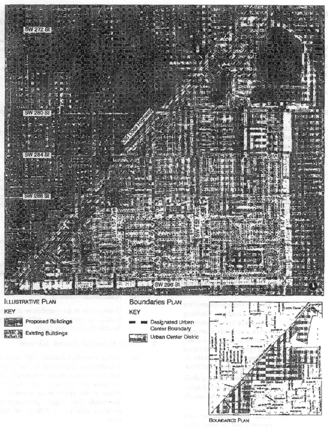

Sec. 33-284.99.32. Purpose, intent and applicability.
Sec. 33-284.99.33. Leisure City Community Urban Center (LCUC) district requirements.
Sec. 33-284.99.35. LCUC Regulating Plans.
Sec. 33-284.99.36. Building placement and street type development parameters.
Sec. 33-284.99.37. Conflicts with other chapters and regulations.
Sec. 33-284.99.38. Nonconforming structures, uses, and occupancies.
Sec. 33-284.99.32.
A.
The regulations contained in this chapter and Chapter 18A, Landscape Code, Code of Miami-Dade County, Florida, shall apply to this article, except as otherwise added to or modified herein.
B.
The Illustrative Master Plan (Figure 1) illustrates the citizens' vision and may be used to interpret this article. Where the Illustrative Master Plan conflicts with the text of this article, the text shall govern.
C.
Figure 1 also shows the boundaries of the Leisure City Community Urban Center (CUC) District as well as the boundaries of the Designated Urban Center. As provided in the Standard Urban Center District Regulations, the Workforce Housing requirement shall apply to the area included within the Designated Urban Center boundaries. These boundaries shall be described as follows:
1.
Leisure City Community Urban Center (CUC) District:
A Portion of section 4 and 5, Township 57 South Range 39 East and a portion of Section 33, Township 56 South, Range 39 East, Miami-Dade County, Florida, Being more particularly described as follows:
BEGIN at the intersection with the Center line of SW 296 Street (the South line of the Southeast 1/4 of said Section 5, Township 57 south, Range 39 East) and the Easterly Right-of-Way line of the South Dade Transportation Corridor (Busway) as shown on the Florida Department of Transportation Right-of-Way Map as recorded in Plat Book 124 Page 76 of the Public Records of said Miami-Dade-County; thence Northeasterly along said Easterly Right-of-Way line of the South Dade Transportation Corridor (Busway) to the intersection with the Northwest corner of Lot 4, Block 1, of NARANJA ASSOC. as recorded in Plat Book 111 Page 57 of the Public Records of said Miami-Dade County; thence Southeasterly along the North Line of said Lot 4 to the Northeast corner of said lot 4 lying on the Northwesterly Right Of Way Line of State Road 5 (US-1); thence Southeasterly across State Road 5 (US-1) to the intersection with the Southeasterly Right Of Way Line of said State Road 5 (US 1), said point of intersection being the Northwest corner of Tract 1, NARANJA LAKES SECTION ONE, as recorded in Plat Book 91 Page 7 of the Public Records of said Miami-Dade County; thence Southeasterly, Northeasterly and Southeasterly along the Northerly Lines of Tracts 1 and 2, of said NARANJA LAKES SECTION ONE, also being the Southerly Right Of Way Line Of Canal C-103N, to the intersection with the East line of said Section 33, Township 56 South, Range 39 East (also being the center line of theoretical SW 147 Avenue); thence Southerly along the East line of said Section 33 Township 56 South Range 39 East (also being the center line of theoretical SW 147 Avenue) to the Southeast corner of Tract 3, of said NARANJA LAKES SECTION ONE; thence Westerly along the South line of said Tract 3 to the intersection with the East line of Tract "E", of NARANJA LAKES SHOPPING PLAZA 1st ADDITION as recorded in Plat Book 128, Page 4 of the Public Records of said Miami-Dade County; thence Southwesterly along the East line of said Tract "E" and along the East line of Tract "D", of NARANJA LAKES SHOPPING PLAZA as recorded in Plat Book 120, Page 59 of the Public Records of said Miami-Dade County, to the Southeast corner of said Tract "D" and the North Right-of-Way line of Naranja Lake Boulevard as shown on said NARANJA LAKES SHOPPING PLAZA; thence Southwesterly across Naranja Lakes Boulevard to the Northeast corner of Tract 11 of NARANJA LAKES SECTION ONE as recorded in Plat book 91, Page 7 of the Public Records of said Miami-Dade County; thence Southerly along the East line of said Tract 11 to the Southeast corner of Tract 11; thence Northwesterly along the South line of said Tract 11 to the Southwest corner of said Tract 11; thence Northeasterly along the west line of Tract 11 to the Southeast corner of Tract 7 of said NARANJA LAKES SECTION ONE; thence Northwesterly along the South line of said Tract 7 to the Northeast corner of Tract "C" of NARANJA LAKES TRACTS as recorded in Plat Book 104, Page 15 of the Public Records of said Miami-Dade County; thence Southwesterly along the East line of Tracts "C" and "B" of said NARANJA LAKES TRACTS to the southeast corner of said TRACT "B"; thence continue Southwesterly Southeasterly and Southerly along the Easterly lines of Tract "A" of said NARANJA LAKES TRACTS to the Southeast corner of said Tract "A"; thence Westerly along the South line and the Westerly extension of the South line of Tract "A" to the intersection with the West line of the Southeast 1/4 of Section 33 Township 56 South Range 39 East (also being the center line of SW 152 Avenue); thence Southerly along West line of said Southeast 1/4 of said Section 33 (also being the center line of SW 152 Avenue) to the Southwest corner of the Southeast 1/4 of said Section 33 (also being the centerline of SW 280 Street); thence Easterly along the South line to of the Southeast 1/4 of said Section 33 (also being the center line of SW 280 Street) to the Southeast corner of the Southeast 1/4 of said Section 33 (also being the center line of SW 147 Avenue); thence Southerly along the East line of said Section 4 Township 57 South Range 39 East (also being the center line of SW 147 Avenue) to the intersection with the North line of the Southeast 1/4 of the Northeast 1/4 of said Section 4 (also being the center line of SW 284 Street); thence Westerly along the North line of Southeast 1/4 of the Northeast 1/4 of said Section 4 (also being the center line of SW 284 Street) to the intersection with West line of the Southeast 1/4 of the Northeast 1/4 of said Section 4 (also being the theoretical center line of SW 149 Avenue); thence Southerly along the West line of the Southeast 1/4 of the Northeast 1/4 of said Section 4 (also being the theoretical center line of SW 149 Avenue) to the intersection with the South line of the North 1/2 of said Section 4 (also being the center line of SW 288 Street); thence Westerly along the South line of the North 1/2 of said Section 4 and along the South line of the N 1/2 said Section 5, Township 57 South, Range 39 East (also being the center line of SW 288 Street) to the East line of said Section 5 (also being the center line of SW 157 Avenue); thence Southerly along the East line of said Section 5 (also being the center line of SW 157 Avenue) to the intersection with the South line of said Section 5 (also being the center line of SW 296 Street); thence Westerly along the South line of section 5, Township 57 South, Range 39 East (also being the center line of 296 Street) to the POINT OF BEGINNING.
2.
Designated Urban Center:
A Portion of Sections 4 and 5, Township 57 South Range 39 East and a portion of Section 33, Township 56 South, Range 39 East, Miami-Dade County, Florida, being more particularly described as follows:
BEGIN at the intersection of the Center line of SW 288 Street (the South line of the Northeast 1/4 of said Section 5, Township 57 South, Range 39 East) and the Easterly Right-of-Way line of the South Dade Transportation Corridor (Busway) as shown on the Florida Department of Transportation Right-of-Way Map as recorded in Plat Book 124 Page 76 of the Public Records of said Miami-Dade-County; thence Northeasterly along said Easterly Right-of-Way line of the South Dade Transportation Corridor (Busway) to the Northwest corner of Lot 4, Block 1, of NARANJA ASSOC. as recorded in Plat Book 111, Page 57 of the Public Records of said Miami-Dade County; thence Southeasterly along the North line of said Lot 4 to the Northeast corner of said Lot 4 lying on the Northwesterly Right Of Way Line of State Road 5 (US-1); thence Southeasterly across State Road 5 (US-1) to the intersection with the Southeasterly Right Of Way Line of said State Road 5 (US 1), said point of intersection being the Northwest corner of Tract 1, NARANJA LAKES SECTION ONE, as recorded in Plat Book 91, Page 7 of the Public Records of said Miami-Dade County; thence Southeasterly, Northeasterly and Southeasterly along the Northerly lines of Tracts 1 and 2 of said NARANJA LAKES SECTION ONE, also being the Southerly Right Of Way Line of Canal C-103N, to the intersection with the East line of said Section 33, Township 56 South, Range 39 East, (also being the center line of theoretical SW 147 Avenue); thence Southerly along the East line of said Section 33 (also being the center line of theoretical SW 147 Avenue) to the Southeast corner of Tract 3, of said NARANJA LAKES SECTION ONE; thence Westerly along the South line of said Tract 3 to the intersection with the East line of Tract "E" of NARANJA LAKES SHOPPING PLAZA 1st ADDITION as recorded in Plat Book 128, Page 4 of the Public Records of said Miami-Dade County; thence Southwesterly along the East line of said Tract "E" and along the East line of Tract "D", of NARANJA LAKES SHOPPING PLAZA as recorded in Plat Book 120, Page 59 of the Public Records of said Miami-Dade County, to the Southeast corner of said Tract "D" and the North Right-of-Way line of Naranja Lakes Boulevard as shown on said NARANJA LAKES SHOPPING PLAZA; thence Southwesterly across Naranja Lakes Boulevard to the Northeast corner of Tract 11 of NARANJA LAKES SECTION ONE as recorded in Plat book 91, Page 7 of the Public Records of said Miami-Dade County; thence Southerly along the East line of said Tract 11 to the Southeast corner of said Tract 11; Thence Northwesterly along the South line of said Tract 11 to the Southwest corner of said Tract 11; Thence Northeasterly along the west line of said Tract 11 to the Southeast corner of Tract 7 of said NARANJA LAKES SECTION ONE: thence Northwesterly along the South line of said Tract 7 to the Northeast corner of Tract "C" of NARANJA LAKES TRACTS as recorded in Plat Book 104, Page 15 of the Public Records of said Miami-Dade County; thence Southwesterly along the East line of Tracts "C", and "B" of said NARANJA LAKES TRACTS to the southeast corner of said TRACT "B"; thence continue Southwesterly Southeasterly and Southerly along the Easterly lines of Tract "A" of said NARANJA LAKES TRACTS to the Southeast corner of said Tract "A"; thence Westerly along the South line and the Westerly extension of the South line of said Tract "A" to the intersection with the West line of the Southeast 1/4 of said Section 33, Township 56 South, Range 39 East (also being the center line of SW 152 Avenue); thence Southerly along the West line of said Southeast 1/4 of said Section 33 (also being the center line of SW 152 Avenue) to the Southwest corner of the Southeast 1/4 of said Section 33; (also being the centerline of SW 280 Street); thence Easterly along the South line of the Southeast 1/4 of said Section 33 (also being the center line of SW 280 Street) to the Southeast corner of the Southeast 1/4 of said Section 33 (also being the center line of SW 147 Avenue); thence Southerly along the East line of said Section 4, Township 57 South, Range 39 East (also being the center line of SW 147 Avenue) to the intersection with the North line of the Southeast 1/4 of the Northeast 1/4 of said Section 4 (also being the centerline of SW 284 street); thence Westerly along North line of the Southeast 1/4 of the Northeast 1/4 of said Section 4 (also being the centerline of SW 284 street) to the intersection with the West line of the Southeast 1/4 of the Northeast 1/4 of said Section 4 (also being the theoretical center line of SW 149 Avenue); thence Southerly along the West line of the Southeast 1/4 of the Northeast 1/4 of said Section 4 (also being the centerline of theoretical SW 149 Avenue) to the intersection with South line of the North 1/2 of said Section 4 (also being the center line of SW 288 Street); thence Westerly along the South line of the North 1/2 of said Section 4 and along the South line of the North 1/2 of said Section 5, Township 57 South, Range 39 East (also being the center line of SW 288 Street) to the POINT OF BEGINNING.
D.
Full scale maps of the Illustrative Master Plan presented in Figure 1, as well as all the Regulating Plans and Street Development Parameters figures in this article, arc on file with the Miami-Dade Department of Planning and Zoning.
E.
No provision in this article shall be applicable to any property lying outside the boundaries of the LCUC as described herein. No property lying within the boundaries of the LCUC shall be entitled to the uses or subject to the regulations provided in this article until an application for a district boundary change to LCUC has been heard and approved in accordance with the provisions of this chapter.

Figure I. Illustrative Master Plan
(Ord. No. 07-169, § 1, 11-6-07)
Sec. 33-284.99.33.
Except as provided herein, all developments within the LCUC District shall comply with the requirements provided in Article XXXIII(K), Standard Urban Center District Regulations, of this Code.
(Ord. No. 07-169, § 2, 11-6-07)
Except as provided herein, all permitted, conditionally permitted, and temporary uses within the LCUC District shall comply with Section 33-284.83 of this code. In addition to the Permitted Uses provided in Section 33-284.83(A), the following shall be permitted:
1.
In the Mixed-Use Corridor (MC) area:
(a)
Automobile and truck services and facilities including:
(1)
Open lot car and truck sales new or used, including as ancillary uses, automobile repairs, body and top work and painting, provided that no more than fifteen (15) percent of the gross building area is devoted to such ancillary uses, and subject to the following conditions:
(a)
That attention-attracting devices, such as blinking or flashing lights, streamer lights, pennants, banners, streamers and all fluttering, spinning advertising devices (either mobile or stationary) are prohibited.
(b)
That outdoor lighting shall be designed to avoid spilling beyond the site boundaries.
(c)
That no vehicular test drives shall be conducted on residential local traffic streets (fifty-foot right-of-way or less).
(d)
That the applicant obtains a certificate of use, which shall be automatically renewable yearly upon compliance with all terms and conditions.
(e)
All outdoor paging or speaker systems are expressly prohibited.
(2)
Open lot car rental
(3)
Automobile parts, secondhand from store building only.
(4)
Automobile body and top work and painting.
(b)
Engines, gas, gasoline, steam and oil; sales and service.
(c)
Garage or mechanical service, including automobile repairs, body and top work and painting. All outdoor paging or speaker systems are expressly prohibited.
(d)
Glass installation.
(e)
Tire vulcanizing and retreading or sale of used tires.
(f)
Truck storage, only within an enclosed building or an area enclosed by a CBS wall.
(g)
Automobile washing.
(h)
Self-service mini-warehouse storage facility in compliance with Section 33-255(23.1) of this Code.
2.
In the Industrial District (ID) area:
(a)
In the Core Sub-district, MC uses at a maximum density of 52 units per net acre or at a maximum density of 60 units per net acre with the purchase of the appropriate number of Severable Use Rights pursuant to sections 33B-41 to 33B-47 of this code.
(b)
In the Center Sub-district, MC uses at a maximum density of 36 units per net acre.
3.
In the Institutional (I) area:
(a)
On properties located between SW 282 and SW 284 Streets, west of SW 152 Avenue, all uses permitted in the Residential (RM) with the density provided on the Density Plan in Section 33-284.35 of this code.
(Ord. No. 07-169, § 3, 11-6-07)
Sec. 33-284.99.35.
The Regulating Plans shall consist of the following controlling plans as defined and graphically depicted in this section:
A.
The Street Types Plan, which establishes a hierarchy of street types in existing and future locations. The five (5) Street Types and the hierarchy of streets (from most important to least important in accommodating pedestrian traffic) are U.S. 1, Boulevard, Main Street, Minor Street, and Service Road.
B.
The Sub-districts Plan, which delineates three (3) sub-districts: the Core, Center, and Edge. These sub-districts shall regulate the allowable intensity of development in accordance with the Comprehensive Development Master Plan and this article.
C.
The Land Use Plan, which delineates the areas where specified land uses and development of various types and intensities shall be permitted.
D.
The Density Plan, which delineates areas where specified minimum and maximum residential densities shall be permitted.
E.
The Building Heights Plan, which establishes the minimum and maximum allowable number of stories.
F.
The Designated Open Space Plan, which designates open spaces. The designated open spaces shall be controlled by anchor points.
G.
The New Streets Plan, which shows the location and the number of new streets needed to create the prescribed network of streets within the LCUC District. All new A streets shall be required in the same general location as shown on the New Streets Plan. All B streets shall be located as provided in Section 33-284.86(F) of this Code.
H.
The Bike Route Plan, which depicts the designated bike routes, including the bike facility requirements, if any, which shall be shown in all development plans.
A. Street Types Plan
B. Sub-Districts Plan
C. Land Use Plan
D. Density Plan
E. Building Heights Plan
F. Designated Open Space Plan
G. New Street Dedications Plan
H. Bike Route Plan
(Ord. No. 07-169, § 4, 11-6-07)
Sec. 33-284.99.36.
A.
All new development and redevelopment within the LCUC District shall comply with the Building Placement and Design Parameters as provided in Section 33-284.85 of this code.
B.
All new development and redevelopment within the LCUC District shall comply with the Street Type Parameters as provided herein:
| Street Type | Minimum Required Configuration |
| U.S. 1 | As provided herein |
| Main Street/SW 280 Street | As provided in Section 33-284.85 (Boulevard) |
| Boulevard | As provided in Section 33-284.85 |
| Minor Street | As provided in Section 33-284.85 |
| Service Road | As provided in Section 33-284.85 |
C.
Unless otherwise provided by the Building Placement and Design Parameters in Section 33-284.85 of this Code, the following front and side street setbacks shall be required for mixed-use development within the LCUC District:
| Street Type | Required Setback | ||
| Core | Center | Edge | |
| U.S. 1 | 0'* or 10' | 10' or 15' | N/A |
| Main Street | 0'* | 10'*** | N/A |
| Boulevard | 0' or 10' | 0' or 10' | ** |
| Minor Street | 0' or 10' | 10' or 15' | ** |
| Service Road | ** | ** | ** |
| Pedestrian Passage | ** | ** | ** |
| Notes: N/A = not applicable * colonnades required ** as provided in Section 33-284.85 of this code *** if a colonnade is provided, the front setback shall be 0' |
|||
(Ord. No. 07-169, § 5, 11-6-07)
Sec. 33-284.99.37.
This article shall govern in the event of conflicts with other zoning, subdivision, or landscape regulations of this code, or with the Miami-Dade Department of Public Works Manual of Public Works.
(Ord. No. 07-169, § 6, 11-6-07)
Sec. 33-284.99.38.
Nothing contained in this article shall be deemed or construed to prohibit a continuation of a legal nonconforming structure, use, or occupancy in the LCUC District that either: (1) was existing as of the date of the district boundary change on the property to LCUC District; or (2) on or before said date, had received final site plan approval through a public hearing pursuant to this chapter or through administrative site plan review or had a valid building permit. However, any structure, use, or occupancy in the LCUC District that is discontinued for a period of at least six months, or is superseded by a lawful structure, use, or occupancy permitted under this chapter, or that incurs damage to the roof or structure to an extent of 50 percent or more of its market value, shall be subject to Section 33-35(c) of this code. However, a lawfully existing single-family home use that is discontinued for a period of at least six months or that incurs damage to the roof or structure to an extent of 50 percent or more of its market value, shall not be subject to Section 33-35(c) of this code.
(Ord. No. 07-169, § 7, 11-6-07)